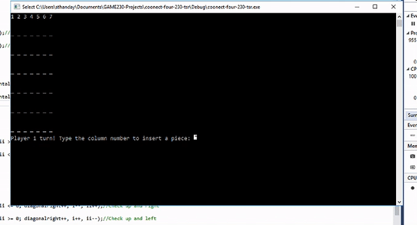

Connect Four on Console

The solo project was done as a part of the course titled Fundamentals of Game Engineering
Connect four is a game for two players. The players take turns inserting pieces of their own color into the top of a grid; the pieces then fall as far as they can, either landing on the bottom of the grid or on top of an existing piece. The first player to line up four pieces (horizontally, vertically, or diagonally) wins.
Tools used: C++, Visual Studio
The project files can be found here GitHub